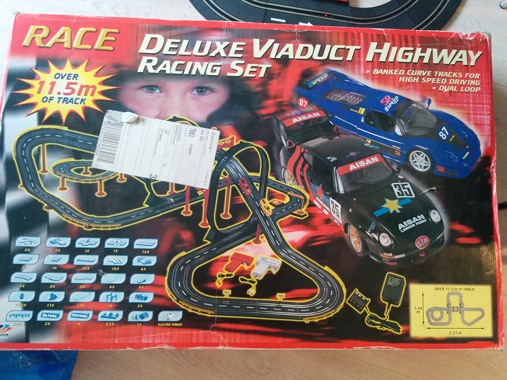

## That escalated quickly!
### Prototyping IoT with JavaScript
- Nodeconf Oslo 2016
- Eirik Stanghelle Morland
- [@orkj](https://twitter.com/orkj)
# Eirik?
- Web developer from Trondheim, Norway
- Fan of beer, programming and GIFs
- Although a beer geek, not a beer snob (true story)
A story
Based on real events
Once upon a time there was a web developer called Eirik Eric
He was a PHP developer
strpos($haystack, $needle);
in_array($needle, $haystack);
## Plan
- Raspberry pi
- Wires
- ...?
- Profit?
ReferenceError: $ is not defined
at Object.<anonymous> (/home/pi/test.js:1:63)
at Module._compile (module.js:444:26)
at Object.Module._extensions..js (module.js:462:10)
at Module.load (module.js:339:32)
at Function.Module._load (module.js:294:12)
at Function.Module.runMain (module.js:485:10)
at startup (node.js:111:16)
at node.js:799:3
pi@raspberrypi ~ $ vim test.js
pi@raspberrypi ~ $ node test.js
Temperature is 19.875
setInterval(function() {
var file = '/var/www/index.php';
var contents = '<?php print "Temperature is ' + temp + '";'
require('fs').writeFileSync(file, contents);
}, 1000);
<meta http-equiv="refresh" content="5">
Continious deployment?
# Can we measure something else than temperature
> Well, Eric. This stuff sure is geeky. And I know you are always calling my new synthesizer projects geeky. But you know what would be even more geeky? If we combined these things. Make the fermentation of the beer feed midi notes into a synthesizer. Real-time
_Synth geek friend of Eric_
> Such interdisciplinary geekyness
_Eric_
> I know, right
_Synth geek friend of Eric_
# What can we do with all this data?
Without further ado:
[Requiem in A minor for flute and cello.](plops-to-midi/index.html#eyJpbnN0cnVtZW50cyI6W3sibmFtZSI6IkJhc3MiLCJjdXJyZW50SW5zdHJ1bWVudCI6ImZsdXRlIiwib2Zmc2V0IjoiNSIsInN0b3AiOjMsImRlbGF5IjoyLCJ0b25lcyI6WyJBIiwiQiIsIkMiLCJEIiwiRSIsIkYiLCJHIl0sInBsYXlpbmciOnRydWUsIm1lbG9keSI6IiIsImRlbHRhIjoxM30seyJuYW1lIjoiTGVhZCIsImN1cnJlbnRJbnN0cnVtZW50IjoiY2VsbG8iLCJvZmZzZXQiOiIzIiwic3RvcCI6NiwiZGVsYXkiOjAsInRvbmVzIjpbIkEiLCJCIiwiQyIsIkQiLCJFIiwiRiIsIkciXSwicGxheWluZyI6dHJ1ZSwibWVsb2R5IjoiIiwiZGVsdGEiOjh9XSwidHVuZSI6IjEiLCJ0b25lc0tleSI6MCwibWVsb2R5IjoiIn0=)
Composer: Black IPA
Another story
Once upon a time there was a web developer called Eirik Eric
He was a PHP developer
Parse error: syntax error, unexpected (T_PAAMAYIM_NEKUDOTAYIM)

Bought when he was 20 years old, because he never got one as a kid
Eric had a tradition with his brothers. Every christmas, they would do something geeky with this slot car track
This is 2 years ago
>But this Eric was also in the escalating business
# Theory
- Get camera working against all odds.
- Google frantically for getting it to "respond" over WebRTC
- Write signalling server for WebRTC
- Struggle with random connection errors for about 5 days.
- ...
- Profit?
# Practice
- Download a package
- Find it supports WebRTC
- "View source"
- Find signalling server and wire up a standard WebRTC library
## But also, Eric was sad.
### Time for a new plan
# Did someone say escalate?
- Found a three.js plugin
- Copy pasted some stuff
- Wrote like 8 lines of code
## I thought this was supposed to escalate?
# One problem with the "game"
# A message from Eric and Eric